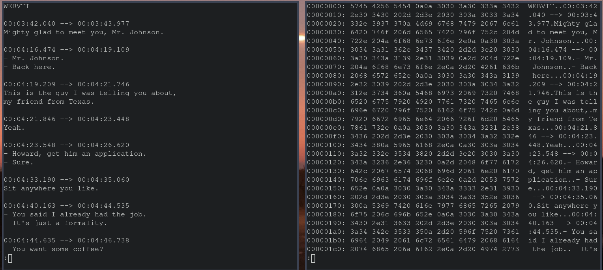
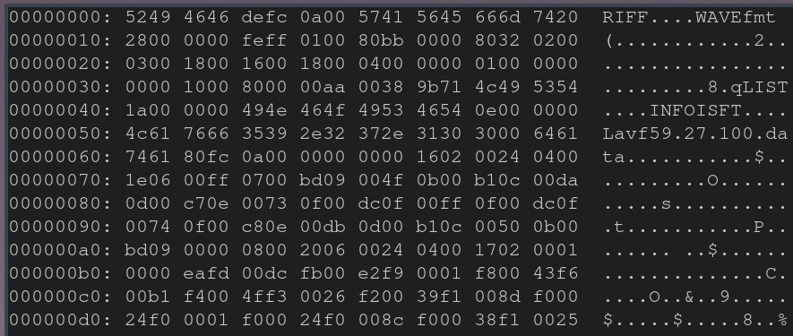
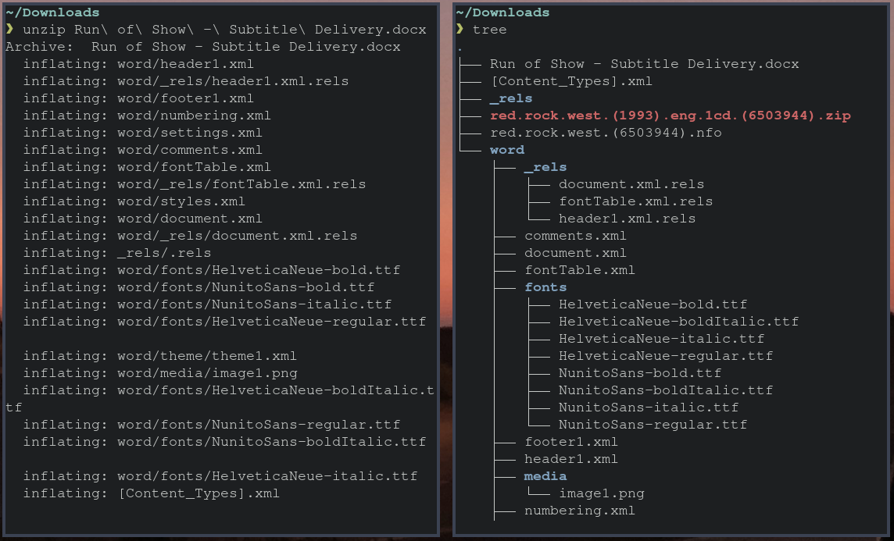
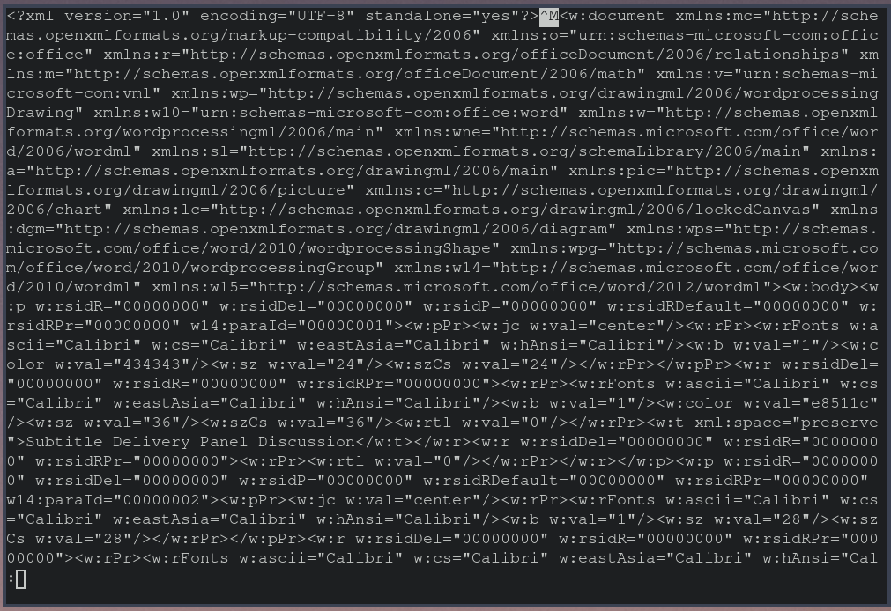
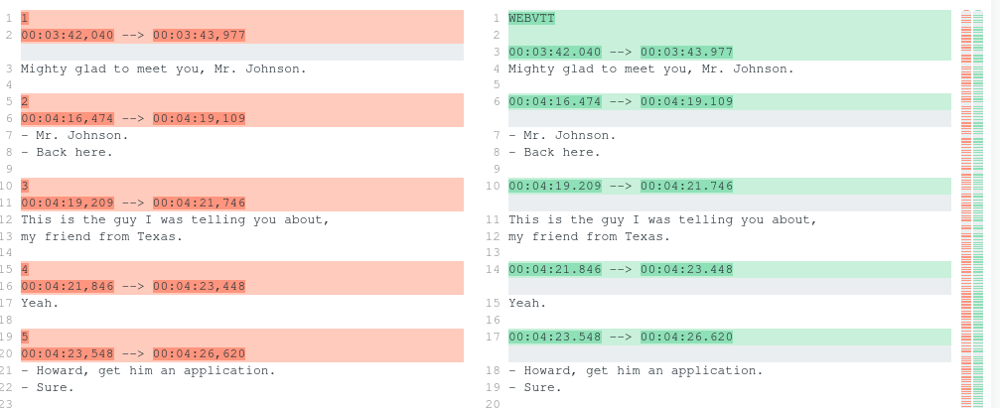
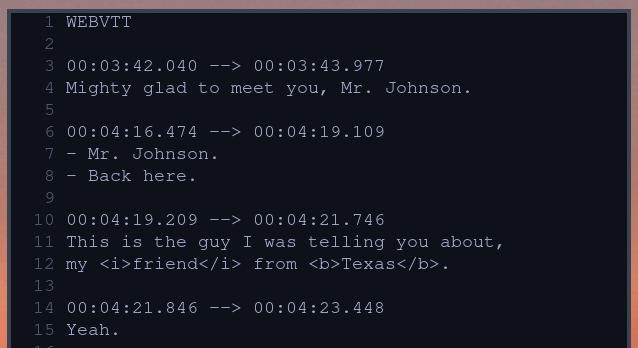
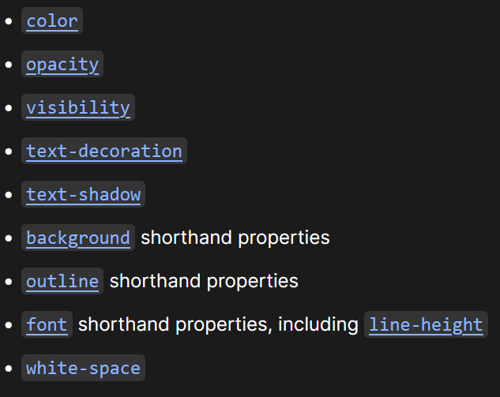
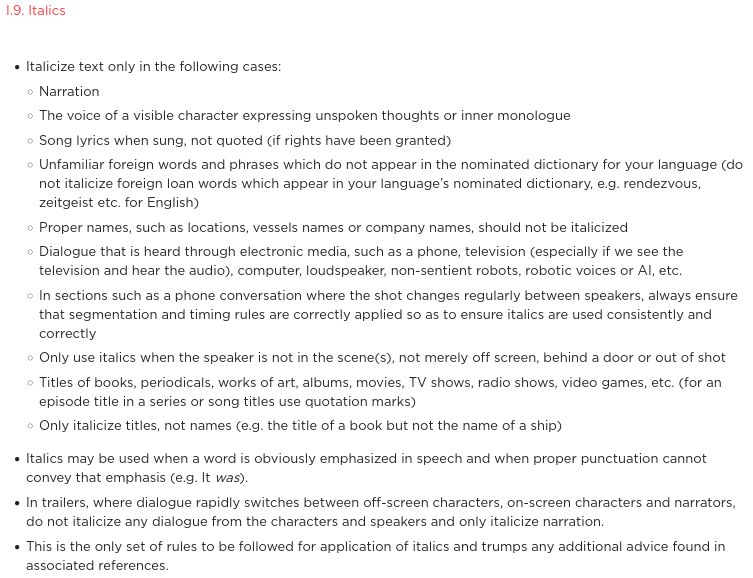
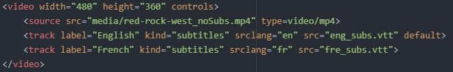

Timed Text Display
AMIA | 2022-09-15
with Brendan Coates (he|his)
Overview
What we are gonna learn about
subtitles as text files
link btw preservation and access strategies
Subtitle Files
They're Just Text!

media files have other stuff going on

text is different than word

word docs are actually xml

VTT and SRT are basically the same

VTTs can/ do contain markup tho
which then has to be parsed and rendered
(i.e. decoded)

Types of Markup
CSS class
italics
bold
underline
Ruby
Ruby text
Voice(like CSS)
CSS class detail

Style Guide
make one, share it

Preservation Strategy
1. embed subs in media file
2. store subs separately
embedded subs
self-contained files
separate subs
versioning
styling
Display Strategy
Embedded Subs
can be accessed on web
but not with HTML5 video tag
can be accessed on VLC
Separate Text
easily displayed and styled on web
somewhat more difficult on VLC
Separate Text - html

burned-in subs
always plays and looks great
can't turn them off
User Preferences
subtitle track display order
HTML5 video tag
1. "default" subs track on video
Video.js
1. most recent subs track in browser cache
2. language match for above
3. "default" subs track on video
wrap up
1. subtitles are just text - still decoded
2. styling timed text can make specific content more clear for users
3. if you style your timed text, tell people why/ how
thank you!